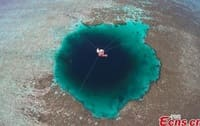

Новини про природу
03 березня 2020 року
Створені людиною предмети перевищили масу всього живого. Результати показали, що через збільшення споживання і розвиток міст, маса штучних предметів перевищила біомасу.
Створені людиною предмети перевищили масу всього живого. Результати показали, що через збільшення споживання і розвиток міст, маса штучних предметів перевищила біомасу.
 18 вересня 2019 року
18 вересня 2019 рокуВ Україні планують створили національний природний парк Королівські Бескиди. До його території повинні включити майже 9 тисяч га комунальних земель.
 29 грудня 2019 року
29 грудня 2019 рокуВчені з'ясували, як на глядачів впливають ТБ-шоу про природу. Результати показали, що сюжети про природу допомагають позбутися негативних емоцій і нудьги.
 07 жовтня 2019 року
07 жовтня 2019 рокуВперше за 20 років знайдено гриб "пальці диявола". Екологи зазначають, що гриб має страхітливий вигляд, але не є отруйним.

20 травня 2019 року
У Китаї знайдена найглибша в світі блакитна діра. Подібні блакитні діри, заповнені водою, утворилися в результаті ерозії гірських порід.
У Китаї знайдена найглибша в світі блакитна діра. Подібні блакитні діри, заповнені водою, утворилися в результаті ерозії гірських порід.
 21 січня 2019 року
21 січня 2019 рокуУ Криму зруйнувався знаменитий водоспад. Причиною обвалення туфових утворень (козирок) стали: мороз і дія проточної води.